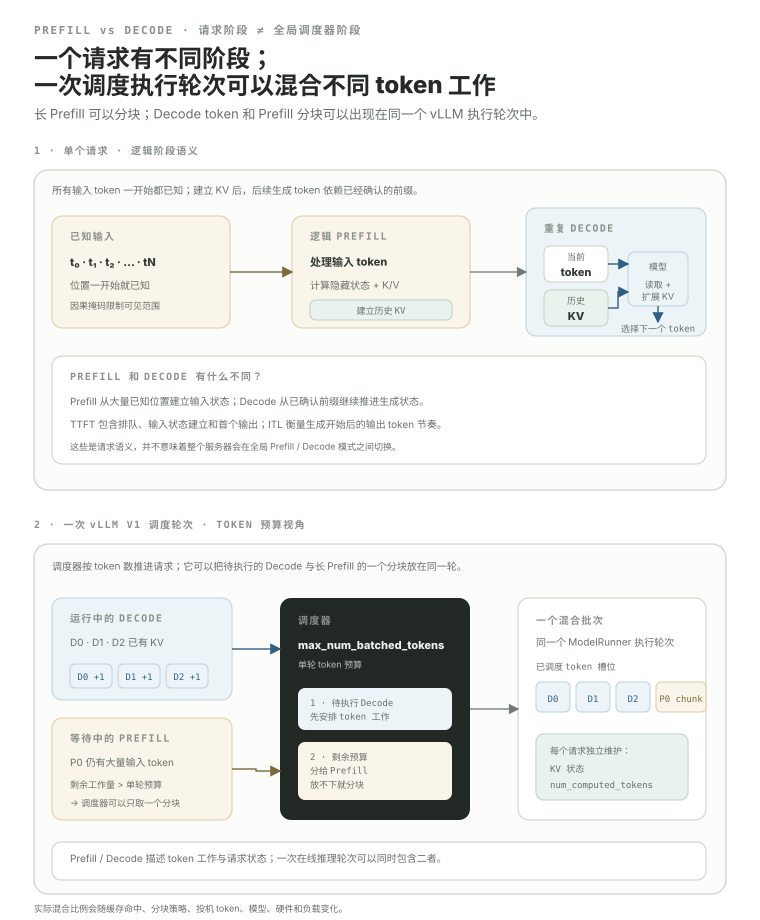

Prefill 与 Decode：同一个请求有两种 workload，但 scheduler 不必切成两个“模式”。
从请求语义看，一个请求先处理 prompt、建立 KV 状态，再进入生成阶段；这两个 workload 通常叫 Prefill 与 Decode。但当前 vLLM V1 的 scheduler 源码甚至明确写着：内部没有一个全局的“decoding phase”或“prefill phase”。它按每个 request 还欠多少 token 计算来分配本轮 token budget，因此长 Prefill 可以被切成 chunks，并与正在 Decode 的 requests 出现在同一次 execution batch 里。
- 准确说出 Prefill 和 Decode 的逻辑边界，同时不把它们误当成 scheduler 的两个全局状态。
- 理解 prompt positions 为什么可以在 causal mask 下并行计算。
- 知道长 Prefill 可以被 chunked scheduling 拆成多个 execution chunks。
- 理解 baseline Decode 为什么每个 request 每步通常只新增一个 token，同时保留 speculative decoding 的例外意识。
- 知道 Prefill 往往更容易形成大 GEMM，而 Decode 更容易受到权重/KV 读取与小 batch 影响。
- 把 TTFT 主要关联到 queue + prompt-building critical path，把 ITL 主要关联到生成阶段 cadence。
- 理解为什么 P/D disaggregation 是资源隔离方案，而不是自动吞吐加速器。
先用一张图把“请求语义”和“实际调度”分开。
上半部分只描述一个 request 的逻辑：已知 prompt 建立历史 KV，然后 Decode 反复用“当前 token + 历史 KV”推进下一 token。下半部分换到 serving 系统：一次 scheduler iteration 可以同时包含多个 Decode token 和一个长 Prefill 的 chunk。

当前 vllm/v1/core/sched/scheduler.py 的注释直接说明：scheduler 没有内部的“decoding phase / prefill phase”；它根据 num_computed_tokens 与请求当前总 token state 的差距，给 request 分配本轮要计算的 tokens。这也是 chunked prefill、prefix caching、speculative decoding 能落进统一 scheduler 模型的重要原因。
schedule() 开头时，重点看“There's no decoding phase nor prefill phase”这段注释。Causal 不等于“Prompt 必须一个 token 一个 token 算”。
Prompt tokens 都已经知道。虽然第 i 个位置不能看未来位置，但 causal mask 可以一次把依赖规则编码进 attention。于是 GPU 能并行计算很多 positions 的 Q/K/V、MLP 等。
第二行表示 baseline decode 的连续 iterations，不表示 new0–new4 同时被最终确认。生成优化可以改变一次 target-model step 覆盖多少候选 token，但不能把已确认前缀的条件依赖凭空删除。
长 prompt 不一定独占一个巨大 Prefill step。
例如一个 20K-token prompt，如果 scheduler 当前 token budget 只有一部分可用，可以先处理前 4K，再在后续 iterations 继续。这样 Prefill 仍是同一个 request 的 prompt-building workload，但 execution 被拆开。
当前 vLLM V1 优化指南明确说明：chunked prefill 在可用时默认启用；调度先安排 pending decode requests，再用剩余 max_num_batched_tokens budget 安排 Prefill。若一个 Prefill 放不下，就自动切 chunk。
同一个 Linear，在 Prefill 和 Decode 的 M 维可以差很多。
把 token 维展平，Linear 可以看成 [M,K] @ [K,N]。一个 Prefill execution chunk 的 M 与本轮安排的 prompt tokens 数量相关；baseline Decode 的 M 则大约与本轮 active decode tokens 数相关。Continuous batching 会让两者的 M 动态变化。
Prefill chunk: M ≈ scheduled prompt tokensvsDecode: M ≈ active decode tokens因此常见经验是：Prefill 更容易形成 compute-dense 的大 GEMM；Decode 在 batch 较小时更容易受权重读取、KV 访问和 kernel overhead 影响。这不是绝对分类：具体瓶颈要看模型、batch、硬件、量化、attention backend，并用 profiler 验证。
用户等“第一个 token”和读后续流式输出，背后是两条不同关键路径。
06.1 已把 ITL 与 TPOT 分开：这里讨论 P/D 时更关心逐 token cadence，所以使用 ITL。
同一张 GPU 服务两种 workload，调度不当时会互相伤害。
这就是 vLLM scheduler / chunked prefill 的直接问题域。
既然两种 workload 的资源需求和 latency 目标不同，可以把它们放到不同 GPU pool。
一拆开就产生新问题：Prefill worker 已经算好的每层 KV，怎样交给 Decode worker？这就是最终 KV Connector 章节的直接问题。
P/D 分离不是自动提高吞吐的魔法。它主要提供资源隔离、TTFT/ITL 独立调优与尾延迟控制，同时新增 KV transfer、路由、容量与故障处理复杂度。